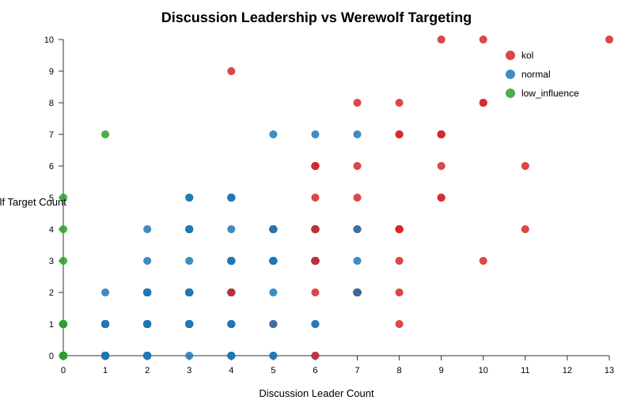
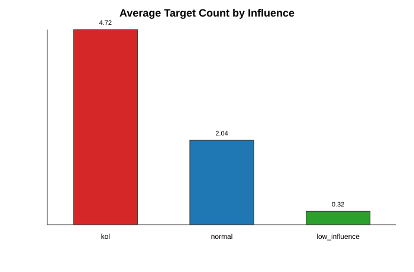
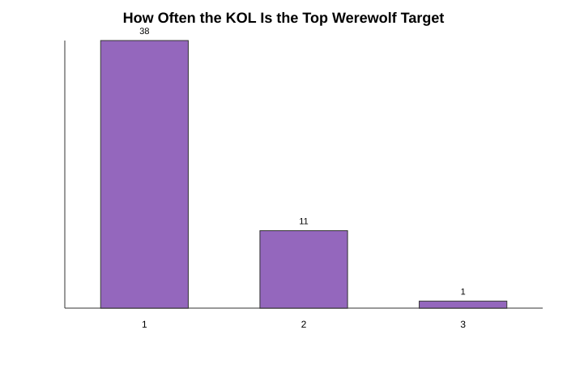
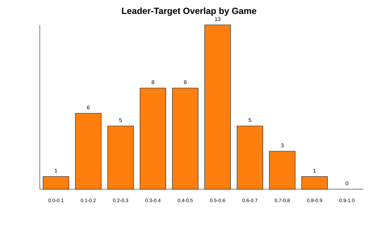

filtered_labeled_games_50.jsondiscussion_leader_count should also have higher werewolf_target_count.| Level | Key Variables |
|---|---|
| Player | discussion_leader_count, influence, werewolf_target_count, werewolf_target_rank |
| Window | discussion_leader, targeted_player, target_is_kol, target_is_leader |
| Game | kol_player, kol_target_rank, windows_targeting_kol, leader-target overlap rate |


| Influence class | Average target count | Median target count |
|---|---|---|
| KOL | 4.72 | 4.0 |
| Normal | 2.04 | 2.0 |
| Low influence | 0.32 | 0.0 |

